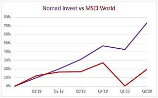
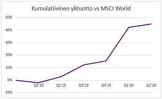
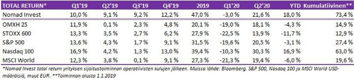
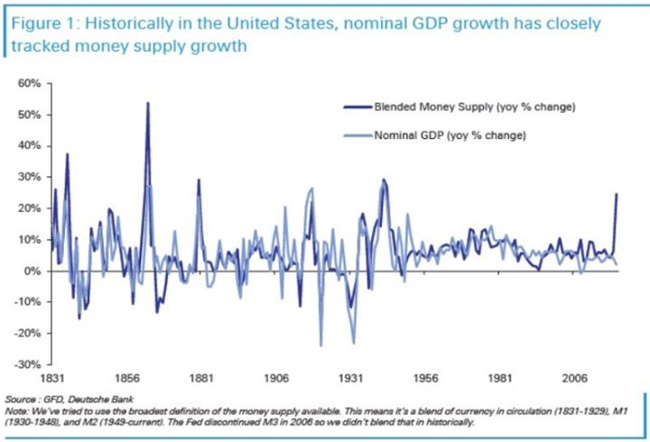
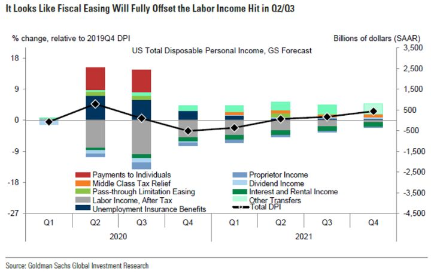
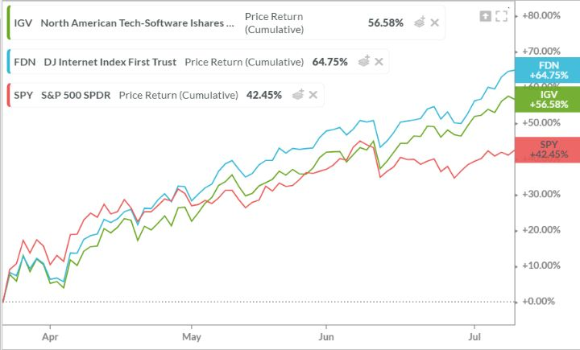
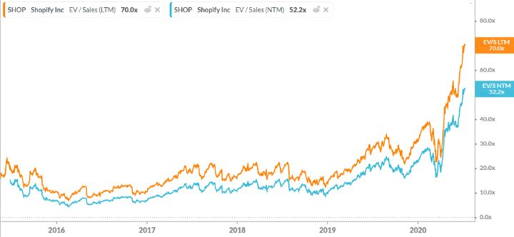
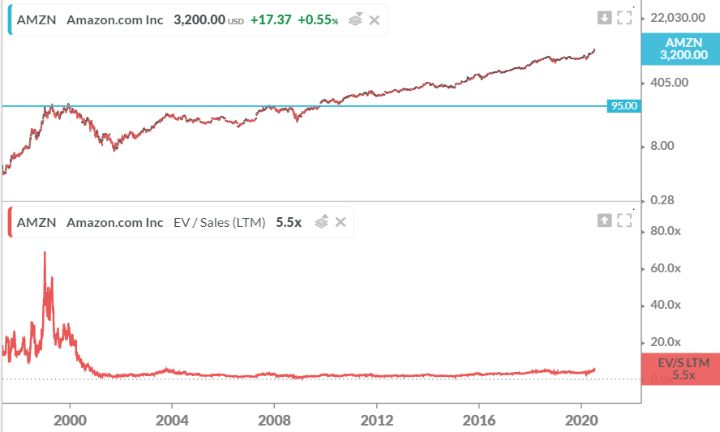
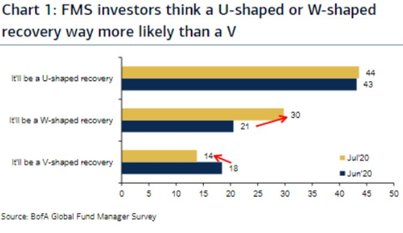

Kvartaalin jälkiviisastelut – Q2/2020
“The year 2020 should (but will not) dispel any faith still remaining in market forecasts.” – Akre Capital Management
1. Mennyt neljännes ja salkun kehitys
2. Paradigman muutos
3. Nöyristy markkinan alttarilla
4. Mitä olemme oppineet tästä laskumarkkinasta?
5. Valikoituja sijoituscaseja
Mennyt neljännes – salkun tuotto +21.6%
Toisen kvartaalin kokonaistuotoksi muodostui kulujen jälkeen +21.6% ja koko alkuvuosipuoliskon tuotoksi +18.0%. Vastaavat tuottoluvut OMXH25 +18.1% ja -4.3% sekä MSCI World +19.4% ja -6.0%. Kuten on havaittu USA ja etenkin teknovetoinen Nasdaq ovat olleet vahvimpia.



Viimeisessä kolmessa kuukaudessa markkinoilla on ollut hyvin vähän tavanomaista. Karhumarkkina jäi lopulta noin kuukauden pituiseksi, josta ponnahdettiin parhaaseen pörssineljännekseen miesmuistiin. Neljänneksessä olisi ollut mahdollisuuksia paljon parempaan.
Jos palataan vielä Q1-katsauksessa luotuun pelikirjaan:
”Pääkohdat strategiallemme ovat:
- Ostamme kun muut panikoivat. Kevennämme, kun noustaan ennenaikaisesti.
- Pyritään löytämään väliaikaisia häiriökohtia markkinoilta likviditeetin puuttuessa.
- Nostetaan riskitasoja sitä mukaan, kun tulee onnistumisia tai osakkeiden ja muiden omaisuuslajien houkuttelevuus kasvaa.”
Ensimmäinen kohta pääsi vain hieman toteuttamaan. Jokaiseen isompaan dippiin ostettiin ja ralleihin myytiin, mutta paljon parempaa lopputulokseen olisi päässyt vain ostamalla alun perin isommin ja pitäen osakkeet. Toiseen kohtaan onnistuimme löytämään mahdollisuuksia, mutta keskuspankkien rauhoittaessa tilanteen, pahimmat häiriöt jäivät maaliskuulle. Kolmanteen kohtaan riskitasoja ei nostettu riittävästi, vaikka onnistumisia tuli kohtalaisen hyvin.
Käytännössä missasimme ison osan rallista (~30-40% pohjilta). Toki olimme joka nousussa mukana, mutta ei riittävällä painolla. Osakepainomme heilui kvartaalin aikana 20-35%:ssa.
Parhaita caseja neljännekselle olivat:
- Iso paino Sammossa.
- Isompi sijoitus Electrolux Professionaliin, joka toi 50 % tuotot muutamissa viikoissa.
- Huhtikuussa alle 0.1% sijoitus öljyn hyvin mataliin myyntioptioihin, jotka myytiin keskimäärin yli 20-kertaisella hinnalla.
- Saimme kymmenillä osakkeilla kymmenien prosenttien tuottoja, mutta yleisesti sijoitusten olisi pitänyt olla suurempia ja pitoaikojen pidempiä.
Paradigman muutos
Jos helmikuussa olisi syystä tai toisesta vajonnut koomaan ja herännyt vasta nyt kesällä, saattaisi joutua hieraisemaan silmiään muistakin kuin unihiekoista. Uneen vaipuessa markkinoilla ja taloudella oli takanaan kymmenen vuoden nousu. Taantuma olisi vain ajan kysymys.
Nyt herätessään saa tietää, että maailmaa ravisuttaa kenties vakavin pandemia sitten Espanjantaudin ja sen seurauksena maailman talous onkin vajoava syvimpään taantumaan sitten 1930-luvun laman. Sitä varmasti kauhistelisi osakesalkun kokeneen kovia ja omistusten arvon laskeneen huomattavasi.
Ei kuitenkaan syytä huoleen, sillä osakkeet ovat vain hieman alas ja useat markkinat ovat jopa reilusti ylös. Mutta oston paikka, se tuli ja meni. Mitä ihmettä täällä oikein tapahtuu, kysyy epätietoinen? Vastaus tiivistynee seuraavan kuvaan.

Talouteen on pumpattu rahaa sellaisella tahdilla, jota ei olla nähty lähes sataan vuoteen. Siinä, missä finanssikriisin raha- ja fiskaalipuolen stimulukset päätyivät suurelta osin pankkien taseita vahvistamaan, ovat nyt valtioiden liikkeelle laskemien ja keskuspankkien ostamien velkapapereiden myynneistä saadut varat päätyneet suurelta osin pyörimään itse talouteen. USA:ssa, jossa työttömyysaste on räjähtänyt ylös, on tukitoimilla monien työttömiksi päätyneiden tilille tupsahtanut enemmän rahaa kuin jos he olisivat olleet töissä.

On tapahtumassa se kuuluisa paradigman muutos. On maistettu kiellettyä hedelmää. Kun sen makuun on päästy, on vaikea kuvitella haluavansa mitään muuta. Tällä on nähtävissä kaksi ilmentymää, jotka molemmat liittyvät moraalikatoon.
1. Moraalikato ja politiikka:
Äkillinen koronan uhka sai valtiot velkaantuvat entistäkin kiihtyvämpään tahtiin. On täysin perusteltuakin, että velkaannutaan, sillä se on parempi vaihtoehto kuin syvä ja vaikea lama. Yleensä kuitenkin sitä mukaan, kun velkaisuus kasvaa, nousee myös velanottajan luottoriski. Nythän korkoja päinvastoin on painettu keskuspankkivetoisesti alaspäin ja markkinat tuntuvat ottavan sen vastaan hyväksyvästi.
Jos tästä harjoituksesta päästään ilman tuntuvasti nousevia valtionlainakorkoja, on vaikea kuvitella, etteikö samaan temppuun turvauduttaisi myöhemmissäkin vastaavissa tai lievemmissäkin kriiseissä. Kuka on se poliitikko, joka ei siihen toimivaksi todettuun temppuun turvautuisi vaan sen sijaan riskeeraisi pahemman talouskurimuksen? Tähän tietenkin pohjaa myös koko teoria ns. modernista rahapolitiikasta (MMT).
Joissain maissa populistiset puolueet ymmärtävät ottaa tämän vaaliaseekseen. Jos esimerkiksi Pohjois-Eurooppa rajoittaa Italian halua elvyttää omaa talouttaan lisäämällä alijäämällä, johtaisi se luultavasti ennen pitkää Italian euroeroon. Vaatimukset vyön kiristämiseksi Etelä-Euroopassa ovat jo aiemmin olleet hyvin epäsuosittuja ja populistipuolueet ovat monissa maissa vahvoissa asemissa. Kun ympäri maailman eletään keskuspankkien tuella, tämän estäminen tietyiltä mailta ei tule uppoamaan hyvin.
Loogisena lopputulemana siitä seuraa se, että miksi valtiot ylipäätään keräisivät veroja tulopohjansa kattamiseksi, jos kerta voidaan vain painaa lisää velkapaperia, jotka keskuspankit haalivat taseisiinsa digitaalisen rahanpainokoneen rahoilla. Jos veroja ei tarvitsi kerätä, mutta kuitenkin verotetaan varakkaita, kuten monissa enemmän vasemmalle suuntautuvissa hallituksissa on ollut tapana, tulee verottamisesta entistä vahvemmin ideologista.
Fakta kuitenkin on, että varallisuuserot ovat leventyneet pitkälti varallisuusarvoja pönkittäneen keskuspankkipolitiikan vuoksi. (Tuloerot eivät monissa länsimaissa ole leventyneet erityisesti.) Oli oikeudenmukaisuudesta mitä mieltä tahansa, on varallisuuden verottaminen useimmissa valtioissa poliittisesti parhaiten läpimenevä tapa pienentää alijäämiä. Sijoittajat, yrittäjät ja vauraat voivat jo alkaa valmistautua veronkorotuksiin.
2. Moraalikato ja markkinat:
Keskuspankkien aggressiivisuudesta on tullut uusi normi eikä poikkeus. Fed on alkanut ostamaan velkapapereita jopa ETF:ien kautta. Logiikkaa ei tarvitse liikaa venyttää todetessaan, että seuraavassa markkinan isossa laskussa osake-ETF:t tulevat ostoslistalle Japanin tyyliin. Korot ovat laskettu eikä Fed ”edes ajattele korkojen noston ajattelemista.”
Keskuspankkiputti on asetettu entistä vahvemmin sijoittajapsykologiaan. Keskuspankkien ei välttämättä edes tarvitse tehdä mitään. Riittää, että markkinat uskovat, että keskuspankit tulevat tarpeen tuleen toimimaan.
Tämä uskomus poistaa tasoittaa markkinoiden häntäriskejä.. Siksi riskisten sijoituskohteiden riskipreemion voisi olettaa laskevan. Tästä hyvänä esimakuna toimii osakemarkkinoiden nopea toipuminen maailmanlaajuisen taantuman vielä ollessa päällä.
Todennäköisesti kuitenkin keskuspankkien ajatuksena on, että inflaation annetaan nousta hieman tavoitteiden yläpuolelle ja sitä kautta rahoitetaan nyt noussut velkaisuus. Kuluttajat maksavat siis nousevien hintojen kautta koronalaskun. Samalla kontrolloidaan korkokäyrää, jotteivat korot pääse livahtamaan liian korkealle.
Reaalikorot tulevat olemaan täten negatiivisia hyvin pitkään. Tämä tukee osakkeita ja muita sijoituksia. Vaikka inflaatio nousisi neljään prosenttiin, se ei ole osakkeille niin huono asia kuin perinteisesti on totuttu, jos keskuspankit pitäisivät tässäkin tilanteessa korot enintään parissa prosentissa.
Vaihtoehtoiset sijoituskohteet tuottaisivat edelleen reaalisesti surkeasti. Ja toisaalta yritysten voitot sentään nousevat nopeammin inflaation mukana, etenkin hinnoitteluvoimaisissa yrityksissä. Vanha sijoitusviisaus, että inflaatio on osakkeille huono, perustuu pääosin sille, että se johtaa korkojen voimakkaaseen nousemiseen. Nyt reaalikorkoja ei kuitenkaan voida nostaa positiiviselle, koska velkaiset yhtiöt, kotitaloudet ja valtiot eivät sitä kestäisi.
Howard Marks on sanonut, että markkinatoimijat ovat kuin ”vapaaehtoiset käsiraudoissa”. Heidät on nollakorkopolitiikalla pakotettu siirtymään riskikäyrällä entistä kauemmas tuottojen tavoittelussaan.
Näiden seurauksia sijoitusmahdollisuuksiin:
- Käteinen tuottaa inflaatio huomioiden selkeän negatiivisesti ja turvalliset velkakirjat jonkin verran negatiivisesti tällä vuosikymmenellä. Niiden osuus sijoitussalkuista pyritään laskemaan, kun tilanteen pysyvyys sisäistetään entistä paremmin.
- Osakkeiden tuotto-odotus on jo historiallista tasoa alhaisempi, mutta voi painua vielä alhaisemmaksi, kun vaihtoehdot osakkeille ovat vähissä. Tämä tarkoittaisi, että osakkeet voivat vielä nousta, jos politiikassa sitoudutaan jatkuvan määrällisen elvytyksen ja suurten alijäämien politiikalle.
- Reaaliomaisuus ja vakaan tuoton sijoitusten tuottoa ajetaan edelleen alas ja hintoja ylös. Kulta ja mahdollisesti jotkin vakaat kryptovaluutat voivat pärjätä hyvin, jopa ajautua kuplaan.
Sijoittajien on tyytyminen alhaisempiin tuottotasoihin. Uusi normaali voi olla parin-kolmen prosentin reaalituotto osakkeista ja hyvällä tuurilla inflaatiotasoon yltävä tuotto velkakirjoista. Tämä voi tuntua epäreilulta, mutta toisaalta universumin sääntökirjassa ei ole kohtaa, jossa vauhdikas vaurastuminen on taattu sijoittajille edes pitkällä aikavälillä. Joskus pelin säännöt muuttuvat. Vuosikymmenten päästä voidaan jopa ihmetellä, miksi sijoittajat vaurastuivat ennen niinkin hyvin.
Nöyristy markkinan alttarilla
“The lesson that I would take from this crisis is that while it is true that those who do not remember history are destined to repeat it, it is also true that those who let history alone drive their investment decisions are in just as much danger.” – Aswath Damodaran
Suunta > nykytila
Se mikä on tiedossa ei liikuta markkinoita. Kuten yhtiökumppanillani on tapana sanoa, sijoittamisessa suunta on tärkeämpi kuin nykytila. Tähän voisi lisätä, että tärkeintä on suunnan suunta, kulmakertoimen muutos eli toinen derivaatta. Ja vielä tarkemmin: sijoittajien kollektiivinen käsitys sen tulevasta kehityksestä.
Maaliskuun pohjissa koronatapaukset olivat vasta lähdössä kunnolla kasvuun länsimaissa. Se oli kuitenkin tiedossa. Tiedettiin, että rajoitukset tulisivat ajamaan talouden syvään taantumaan. Miljoonat ihmiset tulisivat menettämään työpaikkansa. Kysymys olisi enää kuinka syvä ja kuinka pitkä taantuma olisi, ja kuinka nopea elpyminen siitä seuraisi.
Historiallisesti tällaisen ”ulkoisen” tekijän (vs syklinen tai rakenteellinen) aiheuttaman karhumarkkinan keskimääräinen syvyys on ollut luokkaa 30%, kesto alle viisi kuukautta ja elpyminen noin vuoden. Tällä kertaa syvyys osui kohdalleen. Sen sijaan kesto ja elpyminen olivat ennätysnopeita.
Tuolloin maaliskuun pohjissa fiksuimmat markkinan osapuolet aistivat, että sekä keskuspankit että poliittiset päättäjätkin ovat oppineet finanssikriisistä ja tukipaketit tulisivat olemaan isompia ja nopeampia kuin koskaan ennen. Se toinen derivaatta, joka taloudessa vielä sojotti tukevasti alas, tulisi tukitoimien avulla kääntymään nopeasti.
Nähtiin myös, että rajoitustoimilla pystyttäisiin laskemaan tartuntakäyrää riittävästi, jotta terveydenhoitojärjestelmiin koituva rasitus ei muodostuisi liialliseksi. Ensin ”vasaroitaisiin” käyrä alas, ja seuraavaksi olisi vuorossa rajoituksien purku sekä ”tanssi” taudin kanssa, jonka aikana tauti kävisi läpi riittävän suuren osuuden väestöstä, kunnes saadaan joko laumaimmuniteetti tai kehitetään rokote.
Enää ei vastaavaa talouden täysseisakkia tehtäisi, sillä talouskurimuksen pitkittyessä tulisi kysymykseen muut negatiiviset terveydelliset vaikutukset, kuten aina aikaisemmissakin taantumissa on käynyt. Rajoitustoimet tulisivat olemaan jatkossa paikallisia. Jotkut alat kärsisivät pidempään, mutta kokonaisuutena talouspudotukselle pystyttiin jo alkaa hahmottamaan takarajaa. Jotkin alat jopa hyötyisivät uudesta tilanteesta.
Taantuma kiihdyttää käynnissä olevia kehityksiä
Teoriassa osakkeiden arvo muodostuu tulevaisuuden kassavirtojen nykyhetkeen diskontatun nykyarvon mukaan. Jos laskelmasta poistaa ensimmäisen ja jopa toisen vuoden tulokset kokonaan, on laskennallinen vaikutus luokkaa 5-15%. Suurin osa arvosta muodostuu pidemmällä tulevaisuudessa.
Millään muilla yhtiöille tämä ei muutenkaan pidä paikkansa enempää kuin softa- ja teknologiayhtiöillä. Niiden arvon perinteisesti muutenkin on laskettu tulevaisuuden kasvuodotusten varaan.
Toisin kuin perinteiset teollisuusyhtiöt, ne eivät tarvitse suuria koneinvestointeja, jotka aktivoitaisiin taseeseen. Heidän investointinsa suuntautuvat pitkälti aineettomaan omaisuuteen, joista kulut otetaan etupainotteisesti. Ja näiden kasvupanostusten hedelmistä päästäisiin nauttimaan täysimääräisesti myöhemmin, kun ei ole poistoja rokottamassa tulevaisuuden tulosta. Ja nyt monet näistä olivat muutenkin koronatilanteen suhteellisia voittajia.
Jokainen historiallinen taantuma on kiihdyttänyt jo käynnissä olevia kehityksiä. Niin tämäkin. Shopifyn Tobi Lutke kommentoi, että korona-aika kiihdytti e-commercen kehitystä vuosikymmenellä. Ihmiset pakon edessä joutuivat asioimaan netissä entistä enemmän ja laaja-alaisemmin. Opittiin myös, että onnistuuhan se etätyöskentelykin. Myyntineuvottelut hoituvat videon välityksellä yhtä lailla.
Merkittävää muutosta ihmisten käyttäytymiseen tuskin tulee koronan jälkeen, mutta joitain asteittaisia pysyviä muutoksia varmastikin. Esimerkiksi juuri edellä mainitut, jotka yhtäältä satavat softa- ja teknologiayhtiöiden laariin, mutta toisaalta rokottavat muun muassa kivijalkakauppoja ja lentoyhtiöitä (liiketoiminnan kannattavuuden kannalta tärkeän bisneslentämisen vähentyessä).
Korona on saanut ihmiset myös ajattelemaan mikä heille perheyhteisöinä, mutta myös yhteiskunnalle ja planeetalle laajemminkin on tärkeään. Pieni muutos käyttäytymisessä nyt voi johtaa suureen muutokseen pidemmällä aikavälillä. Eettisyys ja kestävä kehitys nostavat ESG-ajattelun tärkeyttä myös sijoitusfilosofiana.
Tesla (200%+), Shopify (150%+), Zoom (70%+), Amazon (60%+)… monet kasvuyhtiöt ovat nauttineet yhdestä historian parhaimmista kolmekuukautisista kurssinousuistaan. Ei siinä, on markkina ylipäätään kokenut poikkeuksellisen vahvan nousun.

Tämä kaikki on jälkiviisastelua. Jos väittäisimme nähneemme tämän etukäteen, valehtelisimme. Me emme olleet niitä ensimmäisiä viisaita, jotka osasivat ostaa isosti pohjista. Missasimme suuren osan rallista, sillä emme osanneet odottaa nousun olevan näin rivakka. Historiallisesti, kuten mainittua, tällaiset ulkoisten tekijöiden aiheuttamat laskutkin ovat, vaikka normaalia taantumaa nopeampia, kestäneet kuitenkin pidempään kuin vain 2-3 kuukautta. Matkalla on myös usein nähty useampiakin ostopaikkoja. Ei tällä kertaa.
Ei olisi kuitenkaan tarvinnut osata ajoittaa markkinan korjausta alas, tai ostaa pohjilta. Kasvusijoittajilla yleisesti on ollut vahva vuosi. Kuten niin monena vuotena tätä ennenkin.
Voimme vain hakea lohtua siitä, että monet konkarit ja kaikkien aikojen parhaimpina pidetyt sijoittajatkin ovat olleet vaikeuksissa markkinan nousun kanssa. Druckenmiller, Tepper, Buffett… useat ovat joutuneet markkinan nöyristämiksi.
Pinnan alla kuplii
Markkina on eteenpäin katsova ja nyt yhtiöiden tulosten odotetaan palautuvan koronaa edeltäneen tason yläpuolelle jo 2021 (S&P500 EPS 2021E 162 vs 2019 152). Tuo antaisi 2021 PE 19.5x, joka ei korkotasoon nähden ole kallis (5% tulostuotto). Olemme skeptisiä siitä, että jo 2021 tulokset olisivat 6.5% yli 2019 tason, mutta annetaan sen olla tässä vaiheessa.
On kuitenkin markkinan osa-alueita, joissa arvostustasoja katsoessa alkaa posket suorastaan punottamaan. Meininki markkinoilla on paikka paikoin jo varsin eläimellistä. Koko retail-sijoittajan vahva mukaantulo (korona-aikana muu vedonlyönti on ollut jäissä) nostaa vertaiskuvia teknokuplan aikoihin. (Hedge fundit ja algoritmit lienevät olevan mukana ruokkimassa retail-imua.)
Vaikka jonkun mielestä voi olla järkevää maksaa 20-30bn yhtiöstä ilman liikevaihtoa (Nikola Corp), on valuaatiolla kuitenkin lopulta aina väliä. Shopify on erinomainen yhtiö ja fantastinen bisnes. Sen yritysarvo on kuitenkin 70-kertaa suurempi kuin sen edeltävien 12 kuukauden liikevaihto. Kasvun odotetaan olevan vahvaa, joten yritysarvo on ”vain” reilu 50-kertaa tulevien 12 kuukauden liikevaihto.

Teknokuplan huipuilla Amazonista maksettiin 60-70x liikevaihto. Vaikka osake on yli 30-kertaistunut noista huipuista, kävi se kuitenkin 90% alempanakin siinä välissä. Osakkeella kesti yli kymmenen vuotta päästä noiden aikaisempien huippujen päälle. Bisneksen piti antaa kasvaa lähtötason korkeisiin odotuksiin. Matkalla arvostustaso on laskenut ~5x tasolle vaikka osakekurssi onkin lentänyt.

Shopify voi osoittautua Amazonin kaltaiseksi yli biljoonan dollarin yhtiöksi (10x nykytasoilta), mutta siltikin seuraavat kymmenen vuotta voivat olla osakkeen omistajalle epätyydyttävät. Lähtöarvostuksella on aina väliä. ”Price is what you pay, value is what you get”, on Herra Buffett sanonut. Mikään ei nouse pystysuoraan ikuisesti.
Olemme olleet kroonisessa alipainossa teknologiayhtiöitä jo pidempään. Nyt menimme jopa myymään Amazon ja Google omistukset nyt Q2:n nousuihin, toki ei lähellekään huippuja. Näiden kahden yhtiöiden kohdalla se ei niinkään johdu älyttömistä arvostuksista, vaan pikemminkin siitä, että FAANG:t ja kumppanit ovat teknisesti railakkaan yliostettuja ja yliomistettuja.
Entä nyt sitten? Nyt narratiivi ei ole enää ollut koronassa. Ei vaikka käyrät ovat lähteneet myös Jenkkilässä uuteen nousuun, latinalaisesta Amerikasta tai Intiasta puhumattakaan. Tilanne voi kuitenkin muuttua nopeastikin.
Bull case
- Korona ei osoittautunut (ainakaan toistaiseksi) niin vakavaksi kuin pelättiin. Ennakoivilla toimenpiteillä ja rajoituksilla oli myös vaikutuksensa asiaan. Markkinat odottavat nyt taloudessa pahimman olevan takana eikä uusia laajia sulkemisia enää nähdä. Koronassa tanssi jatkuu, mutta uusia yllätyksiä ei tule. Kehitetään rokotteet, jotka tulevat auttamaan taudin vastaisessa taistelussa ja poistavat entisestään isompaa riskiä uudesta virusaallosta.
- Talousluvut ovatkin osoittautuneet selvästi paremmiksi (tai vähemmän huonoiksi) kuin on ollut odotettu. Samoin kevään tulosennusteet. Vielä kuitenkin vain harva yhtiö on uskaltautunut ohjeistamaan loppuvuotta. Alkava Q2-tuloskausi voi tuoda muutoksen, jolloin osakkeet voisivat ”korjata” heijastamaan ”totuutta”, eli yhtiöiden johdon ohjeistuksia (ikään kuin he näkisivät valon). Jos tuo ”totuus” on parempi, kuin odotettua, saanee nousu jatkoa. Ainakin jos epävarmuuden aiheuttama riski pienenee.
- Markkinoiden kolkutellessa jo uusia huippuja, ovat silti monet sijoittajat edelleen varovaisia. Edelleen selvä enemmistö odottaa elpymisen kuitenkin olevan hidasta. Heinäkuun kyselyn mukaan vain 14% odottaa V-mallista kehitystä. Moni on siis edelleen varautunut pidempään heikkouteen isolla käteispainolla ja alhaisella osakepainolla. Tulosennusteiden toteutuessa, eivät osakkeet ole korkotasoon nähden yltiökalliita ja raha lopulta hakeutuu osakkeisiin.

- Tässä vaiheessa olisi suotavaa, että perinteiset sykliset alat kuten teollisuus ja pankit tulevat mukaan nousuun. Sijoittajat ovat näitä sektoreita alipainossa. Odotuksia paremmat kvartaaliluvut tai näkymät voi saada näihin nostetta. Kyseiset sektorit ovat ainoita, joita voi pitää edullisena. Nousumarkkina elää sektorirotaatiosta. Uusi vetoapu ei olisi pahitteeksi.
- USA:ssa päätetään uudesta tukipaketista nyt heinäkuussa edellisen erääntyneen jatkoksi. Trump höllentää Kiina-retoriikkaansa voitettuaan presidentinvaalit marraskuussa ja voi palata twiittailemaan jälleen uusista osakekurssien ATH-tasoista.
- Talouden pyörän pyörähtäessä käyntiin myös tarjontapuoli saadaan ajettua ylös samaan tahtiin. Nythän shokki saatiin samanaikaisesti sekä kysyntä- että tarjontapuolelle. Toimitusketjut ovat olleet solmussa eikä varsinaisia ylijäämiä ole varastossa nousevaa kysyntää palvelemaan.
- Inflaatio siis piristyy juuri sopivasti, ei liikaa eikä liian vähän, jotta korot eivät nouse liiaksi, mutta jotta velkataakan edessä inflaatiolla saadaan helpotusta. Samalla bondimarkkina pysyy edes jokseenkin kasassa eikä aiheuta markkinoilla laajemmin rakenteellisia kupruja.
- Talous oli hyvässä vedossa (vaikkakin syklin loppuvaiheilla) ennen koronaan. Työttömyys ja korot olivat alhaalla. Nyt päästään jatkamaan samasta vauhdista, mutta korot ovat vielä alempana ja lisäksi keskuspankeilta on saatu ikuinen lupa ostaa riskiä.
- Toisin sanoen, kaikki menee kuin Strömsössä.
Tämä voi hyvinkin olla base case, tosin Trumpin jatkovalinta ei tällä hetkellä ainakaan vedonlyöntimarkkinan perusteella näytä todennäköiseltä. Omat epäilyksemme kohdistuvat myös tarjontapuolen ylös ajoon ja sitä kautta inflaation kehitykseen.
Lopulta kuitenkin on helppo nähdä, kuinka tätä polkua kuljettaessa päädytään osakkeiden kuplaan. Mutta siitä nyt on turha vielä murehtia, musiikkihan vielä soi iloisesti.
Bear case
- USA:n uusi tukipaketti jää tulematta. Miljoonat ihmiset ovat edelleen ilman työpaikkaa. Globaalin talouden suurin kannattelija, jenkkikuluttaja on ahdingossa. Finanssikriisissä vuoden 2009 maailman BKT laski -0.1%. Nyt 2020 odotetaan luokkaa -5%. Markkinat hinnoittelevat varsin nopeaa elpymistä. Monilla aloilla elpymistahti lienee kuitenkin hidasta. Monet näistä ovat enemmän työllistäviä aloja kuin tilanteesta hyötyvät alat.
- Yritykset leikkaavat etupainotteisesti lisää työntekijöitään – varmuuden vuoksi. Ne toimivat täysin rationaalisesti, sillä myöhemmin voisi tilanne olla huonompi, jolloin jouduttaisiin leikkaamaan entistä enemmän. Taantuman negatiivinen kierre rokottaa kysyntää entisestään. Konkurssit kiihtyvät.
- Keskuspankkien rahahanat sulkeutuvat. Fedin taseen koko on jo kääntynyt laskuun ja se jatkaa pienentymistään vaikka korkoja ei nostetakaan.
- Samalla korona tulee uutena ja vielä isompana aaltona eikä rokotteesta saada merkittävää, laajaa apua. Joudutaan turvautumaan useisiin uusiin rajoitustoimiin.
- Nyt hyötyjiä ovat olleet suuret yhtiöt ja kärsijöinä pienet. Terve kilpailu kärsii, epäarvoisuus kasvaa ja varallisuus keskittyy entistä enemmän.
- Yhtiöiden yksinomainen omistaja-arvon maksimoiminen on kokenut kolauksen. Enää yhtiöt eivät voi pelkästään ostaa omia osakkeitaan ja jakaa osinkoja. Muut sidosryhmät on myös otettava entistä paremmin huomioon. Joillakin aloilla on rakennettava isompia puskureita ”pahan päivän” varalta. Se liudentaan tuotto-odotuksia.
- Demokraatit ottavat vallan valkoisesta talosta, edustajainhuoneesta ja senaatista. Sikäläinen politiikka siirtyy entistä vasemmalle. Kehitys ruokkii myös vastaavaa politiikkaa muualla maailmassa entisestään.
- Valtioiden alijäämät paisuvat. Yritys- ja varallisuusverot nousevat. Nousumarkkinan vetureina toimivien teknologiayhtiöiden luonnollista monopoliasemaa aletaan rajoittaa sääntelyllä rapakon molemmin puolin.
- Likviditeettiä on markkinoilla paljon, mutta niin kuin monesti ennenkin, kurssilasku ajaa sentimenttiä ja pidättelee sijoittajat varovaisina.
- Kauppasota kiihtyy ja globalisaation täyskäännös saa vauhtia. Inflaatiossa tapahtuu se, mitä harva tuntuu odottavan.
Näiden kahden jokin yhdistelmä lienee se todennäköisin. Siksi pyrimme pitämään salkun sellaisessa asennossa, että miten tahansa käy, lopputulos olisi tyydyttävä.
Inflaatio vs deflaatio – siinä on biljoonan taalan kysymys. Olemme kallellaan inflaation puolelle, mutta deflaation mahdollisuutta ei voi sulkea pois. Inflaationäkymissä on mielestämme selkeä häntäriski, joten emme halua omistaa velkakirjoja (päinvastoin katsomme myynnin kannalta) ja toisaalta pidämme mm. kultaa ja muita ”inflaatiosuojia” salkun kulmakivenä.
Olemme tyytymättömiä tuottonäkymiin, mutta samalla tiedostamme markkinan dynamiikaan: likviditeetin paljous yhdistettynä huonoon sentimenttiin ja kevyeen positiointiin. Arvostustasot ovat koholla, mutta samalla korot on painettu alas. Olemme kuin vapaaehtoiset käsiraudoissa.
Mitä olemme oppineen tästä karhumarkkinasta?
- Vuoden 2019 Q1-katsauksessa kirjoitimme edelliskvartaalin 20% laskun nopeasta korjauksesta: ”Paluu ylöspäin oli kuitenkin tällä kertaa erilainen. Harvemmin on nähty, että 20% korjausliikkeestä noustaan V-muodossa näin nopeasti takaisin ylimmille tasoille. Nyt tämäkin nähtiin. Olimme joulukuussa ja alkuvuodesta sitä mieltä, että markkinat ylireagoivat talousnäkymien heikkenemiseen. Ostimme kuitenkin liian vähän osakkeita ja muita riskiassetteja. Jälkikäteen se näyttää hieman hölmöltä.” Tästä emme siis olleet oppineet yhtikäs mitään. Kenties markkinan on tullut paremmaksi ja nopeammaksi hinnoittelemaan muutokset. Jatkossa korjauksien syvyyteen ja niistä palautumisen nopeuteen voi entistä enemmän vaikuttaa keskuspankkiputti. Se toimii niin kauan, kunnes joku kaunis päivä se ei toimikaan.
- Omalle markkinanäkemykselle kannattaa antaa entistä vähemmän painoa. Ainakin vahvoistakin näkemyksistä pitää osata nopeasti päästää irti jos faktat muuttuvat. (”Strong opinions weakly held.”) Trendiin nojaavat systemaattiset säännöt (kuten liukuvat keskiarvot) on hyvä olla suojaamassa itseltään. Meillä sellaiset myös on käytössä, mutta niiden merkityksen painoa on hyvä lisätä. Ne pitävät sijoitettuna pidempään nousumarkkinassa, estävät ostamasta liian aikaisin laskumarkkinassa, mutta myös tässä tapauksessa olisivat tuoneet isommin ja nopeammin sisään uuteen nousuun. Joka tapauksessa liian binäärisiä joko/tai painotuksia tulisi tehdä vain äärimmäisissä tilanteissa.
- Jälkiviisaus- ja ankkurointiharhat ovat pahimmat pääkopan ansat. Olimme haistelleet markkinan laskua helmikuussa jo pari viikkoa ennen laskuun lähtöä, mutta osittain luovutimme shorttien kanssa markkinan vain kivutessa ylöspäin. Laskun alkaessa olimme jokseenkin ankkuroituneita aikaisempiin myyntiyritystasoihin, kun olisi pitänyt lisätä shortteja isosti. Nousussa taasen oli jälleen vaikeaa ostaa jo nousseihin kursseihin, ja odotimme historiaan nojaten pohjien uudelleen testausta, jota ei koskaan tullut.
- Historiasta pitää oppia, sillä monesti historia toistaa itseään. Joskun kuitenkin myös markkinat oppivat historiasta. Joskus "this time is different".
- Markkina on nöyryytysmekanismi. Mitä pidempään siellä operoi, ymmärtää kuinka vaikeasta systeemistä on kyse. Dunning-Kruger -vaikutus toimii mitä suurimmassa määrin. Siltikin, kovimmat konkaritkin yli 30 vuoden kokemuksella aika ajoin tekevät virheitä. Se on lohdullista, mutta samalla kuvaavaa kuinka kovin raadollisia markkinat ovat. Koskaan ei voi lopettaa oppimasta ja sopeutumasta uuteen.
- Usko on vahvistunut entisestään, että markkinoiden voittaminen useammilla ajanjaksoilla vaatii laaja-alaista osaamista yli sijoitustyylien. Pelkkään yhteen sektoriin, varallisuusluokkaan tai tyyliin sitoututuminen, vaikka tuo paikallista etua, voi silti tuottaa varsin pitkäaikaisia alisuoriutumisen jaksoja suhteessa markkinaan. Markkinat ovat hyvin monimutkainen ja avoin systeemi, joten niiden dynamiikan ymmärtämisessä auttaa generalistinen osaaminen.
- Jos ei tiedä, mitä tehdä, seuraa keskuspankkeja. Heillä on ne rahan painokoneet.
Valikoituja sijoitus-caseja
Lopuksi muutamia yksittäisiä nostoja salkusta. Jos on jaksanut lukea näinkin pitkälle, voi niistäkin saada irti jotain mielenkiintoista.
Arvostuscaset:
- Norjalainen yhtiö Subsea 7 tekee rakennustöitä meren alla. Kun pääasiallinen asiakaskunta on öljy-yhtiöitä, ei ole täysin yllättävää, että osakkeen hinta on jäänyt lähelle 15-vuoden pohjia. Yhtiön laatu on kuitenkin hyvä. Subsea 7 on nettovelaton. Yhtiön laivat ovat alan parhaat, eikä laivakantaan tarvitse enää suuria investointeja. Yhtiö on tehnyt viimeisen kuuden vuoden aikana USD2.2bn vapaata kassavirtaa, kun sen markkina-arvo on USD2.0bn. Seuraavat pari vuotta on tulosmielessä heikkoja, koska öljyinvestoinnit merellä on ajettu hyvin alas. Silti vapaan kassavirran tuoton odotetaan olevan tulevatkin vuodet selkeästi yli 10 %. Tämä siis aikana, jolloin alan investoinnit ovat pohjalla. Mielenkiintoista yhtiössä on, että sillä on vahva asema myös offshore-tuulivoimaloissa, jolle on helppo nähdä kasvua seuraavat 20 vuotta. Tällöin hinnoittelukertoimet voivat nousta kasvunäkymien ja paremman ESG-kelpoisuuden myötä. Joten vaikka pitäisi öljyntuotantoa merelle auringonlaskun alana, sille on tulossa korvaaja. Jos öljy palaisi USD60-80/barreli tasoille ja merellä poraaminen kiihtyisi, yhtiö voisi tehdä nykyhinnalle 30-40 % vapaan kassavirran tuottoa.
- Fortum saa myytyä kaukolämpöbisneksen kovilla hinnoilla nollakorkoympäristössä ja vähennettyä velkataakkaa. Tämä mahdollistaa 1.10 euron osingon jatkossakin. Hiilivoimalat pitävät ESG-sijoittajat loitolla. Mutta toisaalta jonkun niitä pitää vielä pyörittää, koska muuten Saksan sähkömarkkina ei toimisi – etenkään ydinvoimasta luopumisen jälkeen. Tuotto mielessä ESG-sijoittaminen onkin ollut viime vuosina kannattavaa. Sijoittamisessa kuitenkin usein se suunta on tärkeämpi kuin nykytila. Voi siis olla hyvä sijoittaa yhtiöön, joka vielä on näillä mittareilla puutteellinen, mutta tulee parantamaan jatkuvasti tulevina vuosina, kun uusiutuvien osuus voimantuotannosta kasvaa.
- Pankit ja Sampo: Palkkiot tulevat laskemaan, fintech uhka, matalat korot ovat täällä pitempään. Suosimme vahvoja yrityspankkeja kuten Nordea ja SEB isommilla painoilla. Myös Aktiaa, SHB:tä ja Swedbankia on salkussa. Yhdysvalloista omistamme JPM ja Wells Fargoa. Fintech on pankeille uhka, mutta toisaalta digitalisaatio mahdollistaa jatkuvasti kulusäästöjä. Tiukka regulaatio ja rahanpesusäädökset tuovat esteitä. Meidän lähtökohtamme on, että pankkien liikevaihdot ja ehkä tuloksetkin ovat kymmenen vuoden päästä nykyistä hieman alhaisempia. Pankkien tulos on kuitenkin pääasiassa vapaata kassavirtaa, joten 7-8 % osingot nykykursseilla ovat hyvin kestäviä. Koska pääomavaateet ja tiukka regulaatio ei mahdollista kunnon riskinottoa, näemme pankit aikaisempaa turvallisempina. Etelä-Euroopan todella edullisen näköisiin pankkeihin emme uskalla kuitenkaan koskea, koska näemme euroalueesta irtautumiset turhan todennäköisenä.
- Berkshire Hathawayn emme näe yrityksessä erityisen suurena potentiaalisena nousijana, mutta se on silti poikkeuksellisen paljon alihinnoiteltu suhteessa osiensa arvoon, laskelmiemme mukaan noin 20%, jos Covid-19 alkaa olla jo voitettu kanta. Sijoittajat ovat kritisoineet yhtiötä suuresta kassavarannostaan. Toisaalta se olisi positiivinen optio, jos myllerrys vielä palaisi markkinoille. Muuten yhtiö voisi alkaa ostaa reilummin omia osakkeitaan, jolloin alennus painuisi pienemmäksi. Ei ole ensimmäinen kerta, kun Berkshire Hathawayn epäillään pudonneen kehityksen kelkasta. Yleensä nämä hetket ovat olleet hyviä aikoja sijoittaa yhtiöön.
- Metso Outotec vaikuttaa mielenkiintoiselta sijoituskohteelta, jos uskoo yhtään johdon synergiatavoitteiden toteutumiseen. Outotecin ongelmaprojektien loppuminen ja synergiat tarjoavat mahdollisuuden nostaa tulosta reilusti lähivuosina. Arvostusero Sandvikiin ja Epirociin kasvaa tässä skenaariossa aivan turhan suureksi (~35 %). Jos uskoo inflaatioon, yhtiö pärjää hyvin metallin hintojen noustessa. Kevään nousun myötä olemme jättäneet positiolle kasvunvaraa, jos osake syklisenä korjaisi alaspäin lähemmäksi neljää euroa.
Kasvu:
- Hansa Biopharma on uusi ostos salkussa. Se on pienehkö bioyhtiö (EUR1000m) Ruotsista. Heillä on ollut ongelmia Yhdysvaltojen viranomaisen kanssa tärkeintä lääkettä koskevissa tutkimuksissa. Tämä on selkeä uhka kurssille edelleen. Samaan aikaan yhdysvaltalainen geeniterapian johtaviin nimiin kuuluva Sarepta lähti yhteistyöhön Hansan kanssa saman lääkkeen soveltamisesta geeniterapian yhteydessä. Koska geeniterapia on hyvin mielenkiintoinen ala, olemme mukana osakkeessa suuresta riskistä huolimatta. On mahdollista, että Hansan imlifidase voisi toimia muidenkin geeniterapioiden hoidon tukena. Yhtiön uutisvirta on kääntynyt selkeän negatiivisesta selkeän positiiviseksi ja samoin osakkeen momentum on vahva, alkuvuoden tuoton ollessa 228%. Ostomme jälkeen yhtiö on noussut kahdessa viikossa 50%, joten olemme jo hieman myyneet osaketta. Etenkin momentum-osakkeissa on hyvä pitää stop-loss taso myynneille, jos momentum hiipuu.
- Kamux löysi tiensä uudestaan salkkuun, kun Intera luopui jälleen omistuksistaan. Lisää tavaraa on tulossa myyntiin. Ongelmat ovat edelleen samat. Yhtiön kilpailuetu on rajallinen ja käytettyjen autojen myynti ei ole kasvuala, ja siirtyminen sähköautoihin voi aiheuttaa ainakin väliaikaisia mullistuksia. Lisäksi ulkomaiden kasvu ei ole yhtä vauhdikasta ja kannattavaa kuin Suomessa aikoinaan. Toisaalta yhtiöön ei ole hinnoiteltukaan kasvua, vaan jopa marginaalin tippumista pitkällä aikavälillä. Edelleen siis yhtiön ulkomaan laajeneminen on käytännössä ilmainen optio yhtiön kurssissa. Käytettyjen autojen myynti on kuitenkin iso ala jo Suomessa, ja Kamuxilla on hyvät mahdollisuudet tuplata liikevaihto kotimarkkinoillakin.
Markkinaneutraalit ideat:
- Vahvemman markkinanäkemyksen puutteessa, markkinaneutraalit ideat kiinnostavat normaaliakin enemmän. Yksi sellainen on short Latour vs long sen listatut portfolioyhtiöt (mm. Assa Abloy, Tomra, Sweco, Securitas). Latour on sijoitusyhtiö, jolla käydään kauppaa 35% preemiolla suhteessa omistusten arvoon. Pidämme joitakin omistuksia haastavasti hinnoiteltuna, mutta olemme silti ostaneet osakkeita, koska haluamme vain ottaa näkemystä sijoitusyhtiön preemiosta. Usein tällaisissa tilanteissa on mahdollista ottaa tavallista suurempia positioita, koska riski on rajatumpi. Olemme käyneet listaamattomat yhtiöt läpi, ja niiden laadun ja menneen sijoitusmenestyksen myötä olemme valmiit hyväksymään Latourin 5-15% preemiolla. Tosin longiksi menemiseen haluaisin nähdä tällaisille yhtiöille tyypillisen alennuksen suhteessa osien summaan. Toinen vastaava, jonka preemio on kuitenkin jo osaltaan purkaantunut, ja jota olemme jo sulkeneet voitollisesti, on Lundbergsföretagen.
Erikoistilanteet:
- Pihlajalinna. Ostimme reiluhkon position osaketta @ EUR13.50. Tällä hinnalla markkinat hinnoittelivat jo lähes 40% todennäköisyyttä fuusion kaatumiselle. Kun osake on noussut selkeästi yli 14 euron, olemme taas pienentäneet omistusta. Edelleen osake on 10% alle Mehiläisen ostotarjouksen. Arvioimme yritysoston toteutumiselle ~85% todennäköisyyden. Puhtaasti odotusarvoilla osakkeen hinta on edelleen alhainen.
Disclaimer:
Kolumnit sisältävät mielipiteitä ja mahdollisesti tietoa omista sijoituksistamme, jotka voivat vaihdella päivästä toiseen. Mitään, mitä kirjoitamme ei tule ottaa sijoitussuosituksena. Kuten teksteissämme painotamme, päätökset kannattaa aina tehdä itse. Lukija vastaa itse voitoistaan ja tappioistaan.